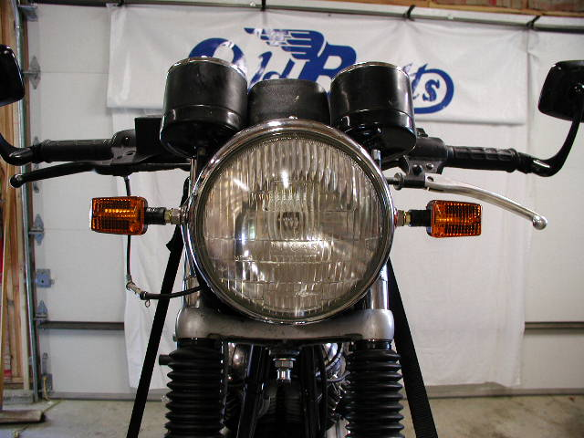
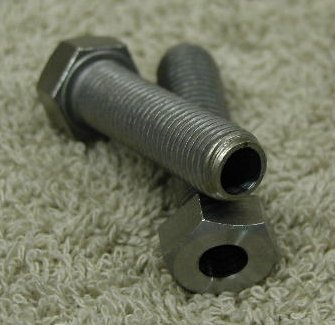
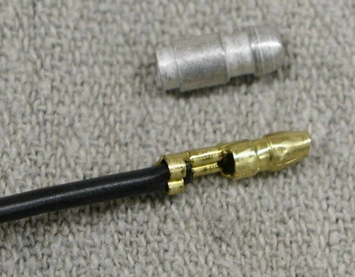

Front Stainless Mounting Bolts for Mini Stalk Turn Signals
The price for this set of two mounting bolts (part # 06-2321/B) is
$0.00,
and is current as of
02/12/21.

This pictures shows the turn signals mounted on a Commando. The mounting bolts replace the stock bolts that hold the headlight
bucket in place.
 Installation:
Installation:
Replace the stock bolts with these bolts, tightening them as you would your stock bolts.
Reverse the nuts on the Mini Stalk so they can act as jam nuts and thread them up flush with the body of the turn signals.
Snake the two wires through the bolt and thread the turn signal as far as you can into the bolt.
Position the turn signal to where you want it and tighten the jam nut against the bolt.

We make these mounting bolts from a stainless bolt, 7/16 x 20, 1 1/2" long, and bore out the center.
We then tap the head end to 8 x 1.25 Metric to accept the Mini Stalk.
We then turn the end of the head to remove the lettering on the bolt head providing a flat surface for the jam nut to press
against.

Note:The Mini Stalks come with a smaller bullet terminal than the standard Lucas bullet terminals. If you want the Mini Stalks to
plug into your stock wiring harness, you'll need to replace these -- see
Lucas Bullet Type Terminal and Installation.
Return to Old Britts home page
….. Our Products, Ordering
Norton Parts…..
Lamps, Direction Indicators
This page was written and designed by F. H. Eaton
& Associates if you have any questions or comments please
contact us at info@fheaton.com